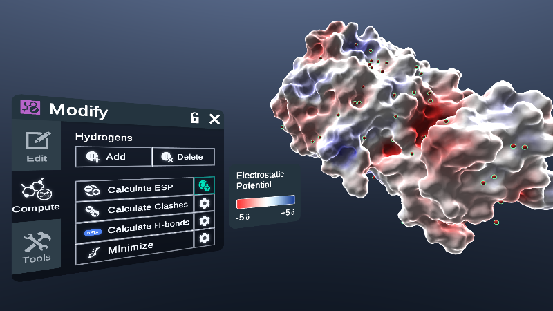
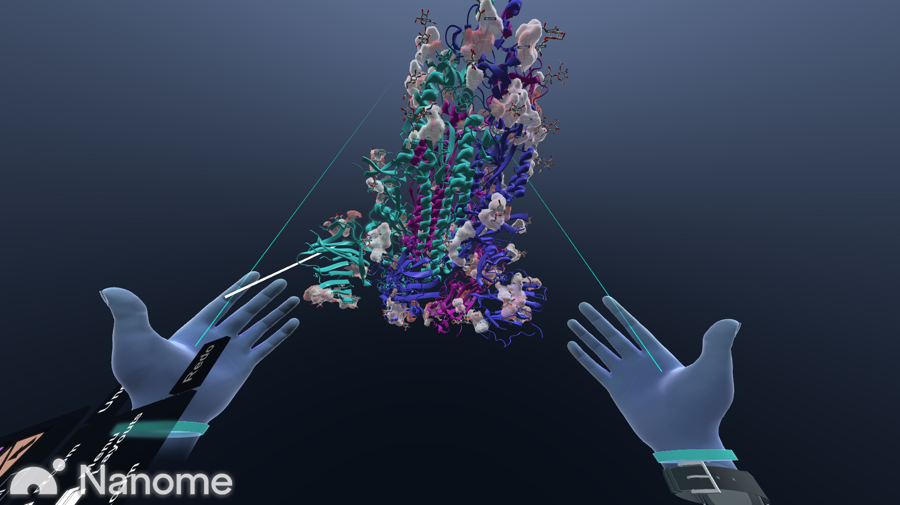
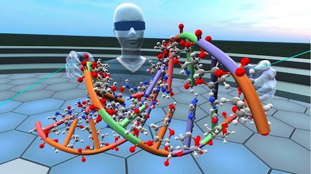
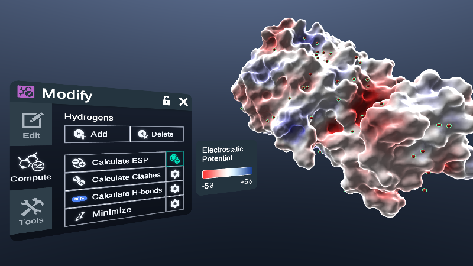
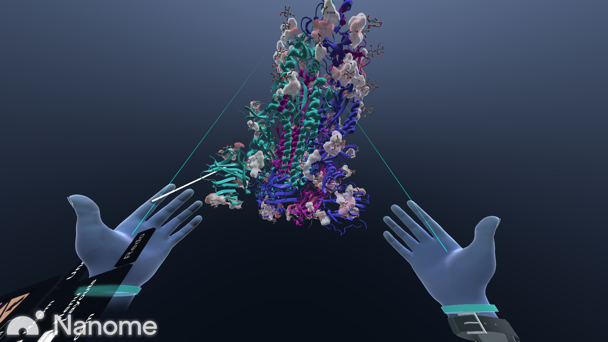
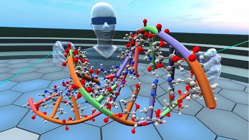
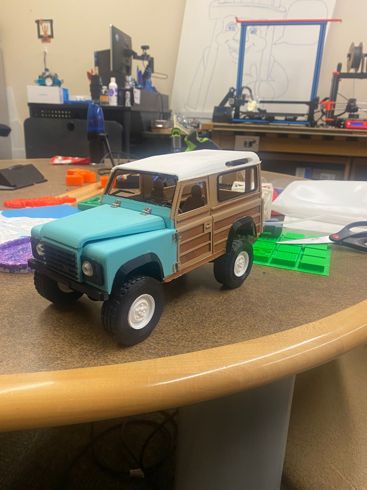
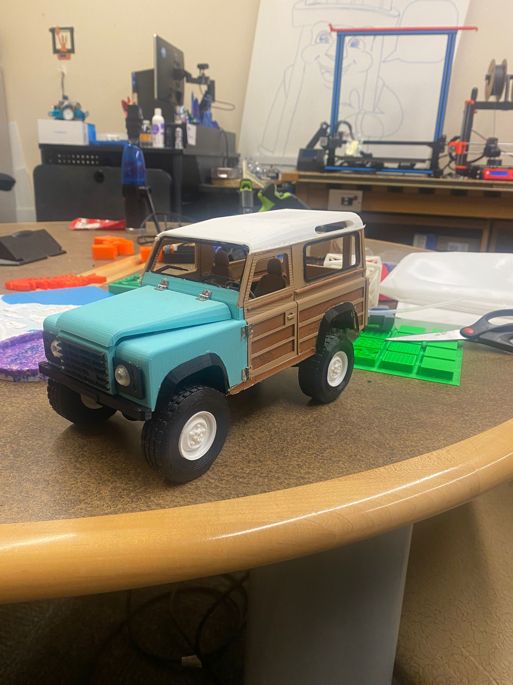

Outcomes Magazine 2023
Outcomes Magazine recognized our efforts in advancing tech innovation, detailing our projects and the technologies we leverage to turn creative ideas into real-world solutions.
Welcome to a more detailed look at my professional journey. As a computer science student, I thrive on tackling complex problems and transforming ideas into functional software. Here, I share some of my projects, articles, and coding challenges that have shaped my skills, understanding, and my approach to technology.

I regularly engage with LeetCode and Codewars to refine my problem-solving skills and master data structures and algorithms. Below are some highlights of my coding journey, showcasing solutions to some of the interesting problems.
Explore some of the articles I've written, discussing various tech topics and sharing insights from my experiences:
My journey in Virtual Reality has been very informative and diverse, covering a range of applications from educational tools to immersive app development. I have explored platforms like Human Anatomy VR, VXR Labs Biology, and Nanome for visualizing complex biological and chemical structures. Additionally, I am enhancing my skills in creating immersive VR applications using Unity and C#, currently advancing my expertise through an XR Terra Bootcamp, which I am attending on a full scholarship. Below are some highlights of my research that demonstrate my expertise:
 





I collaborated with a chemistry professor to utilize Nanome, a VR software, for creating interactive 3D visualizations of molecules. This project aims to enhance the learning experience for students in chemistry by allowing them to explore molecular structures in an immersive environment.

Here are some of the innovative 3D printing projects I've worked on, demonstrating my ability to transform digital designs into tangible objects.


This intricate 3D printed model showcases the detailed urban layout of Boston. Created using a Prusa 3D printer, the model captures the city’s diverse architecture and geography with high precision. This project highlights advanced techniques in 3D printing that involve meticulous layering and careful material selection to achieve both aesthetic appeal and geographical accuracy. The model serves not only as a tool for urban planning discussions but also as a compelling educational resource to study cityscapes and infrastructure development.
This 3D printed anatomical heart model vividly illustrates the heart's complex vascular structure with exceptional detail, using dual-color filament to differentiate arterial (red) and venous (blue) blood paths. Developed as an educational tool, this model aids in medical and anatomical studies, offering a hands-on experience that enhances understanding of human cardiac anatomy. The precision of this model highlights advanced 3D printing techniques that are revolutionizing medical education.


 

I specialize in capturing immersive 360-degree photos and creating engaging virtual tours. Below are some examples of my work in 360 photography, showcasing various locations and the virtual tours I've developed. All of the pictures have been captured with an Insta360 ONE X2 camera
This 360 tour captures the vibrant atmosphere of the Technovator and Campus Quad, offering a panoramic view that places you right in the middle of the scene.
I developed an immersive 360-degree virtual reality tour for the CCER Nursing Department at UMass Boston. This virtual tour is designed to give users a realistic experience of being on site, which is now an integral part of the department's orientation and promotional activities. By simulating the actual environment of the nursing department, prospective students and staff can explore the facilities in detail, enhancing their understanding and appreciation of the campus before even visiting in person.
My journey with RoboMasters has significantly sharpened my robotics skills and my understanding of interactive hardware environments. Here’s how I’ve been engaging with these sophisticated machines:
Utilizing the RoboMaster app, I've controlled and programmed these advanced robots, enhancing their capabilities for real-world scenarios. This includes their ability to shoot lasers during competitions. This hands-on exprience has deepend my practical knowledge of robotics engineering and software development. These robots have a camera which can be used to navigate around obstacles and for target recognition in competitions. The RoboMaster app has a feature by which the robot is targeted to a specific object and follows it around which is an important feature during matches.
Below are some of the Figma projects I have designed. These projects showcase my skills in UI/UX design, demonstrating my ability to create functional and aesthetically pleasing interfaces.
I use these kits to teach students about foundational topics in robots. These robot kits are designed to ignite curiosity and enhance STEM learning. Each kit is a gateway to the practical world of robotics, where you can build, program and innovate. Students are not just learning to code — they are learning to create with technology, developing skills that will drive their future.
This starter kit is perfect for beginners, featuring easy-to-assemble parts and simple programming tasks to introduce the basics of robotics.

This kit is a bit more complex, which includes more sensors and programming options for intermediate learners.
Interacting with M-Bot has been a gateway to understanding the inner workings of robotics, as well as honing my problem-solving skills, fostering creativity, and developing critical thinking. M-Bot served as my companion through the exploration of programming , electronics assembly, and mechanical engineering, igniting a passion that continues to fuel my fascination with STEM disciplines.

We're proud to showcase that "The Technovator", our University innovation hub, has been featured in multiple IT Outcomes magazines. These features highlight our ongoing commitment to leading-edge technology and innovative solutions.


Outcomes Magazine recognized our efforts in advancing tech innovation, detailing our projects and the technologies we leverage to turn creative ideas into real-world solutions.

The Eagle Jet RC Helicopter with Gyro is an advanced remote-controlled helicopter designed for both recreational and educational purposes. Its sophisticated design and gyro technology make it an excellent tool for learning about aerodynamics, mechanics, and control systems.
The Eagle Jet RC Helicopter can be used in various educational settings to provide learning experiences in several key areas. Students can learn about aerodynamics by observing how the helicopter generates lift and thrust, and how it maneuvers through the air. This includes understanding the effects of air resistance and the role of gyroscopic stability in maintaining balance.
Disassembling and reassembling the helicopter teaches students about mechanical engineering concepts, such as gears, motors, and the use of lightweight materials. This helps them understand the construction and functionality of complex mechanical systems.
Operating the RC helicopter provides practical insights into control systems. Students learn how remote commands are transmitted and executed, which helps them understand the basics of electronics and sensor technology used to maintain stable flight. Using the helicopter in an educational setting encourages the development of problem-solving skills. Students can diagnose and fix issues such as motor failures or rotor imbalances, which enhances their troubleshooting abilities and technical knowledge.
We use it in our educational program focused on STEM (Science, Technology, Engineering, and Mathematics).
The development station at Technovator, equipped with Alienware technology, is optimized for software development and virtual reality applications.
This powerful setup doesn't just handle demanding software like Unity for game development and virtual simulations with ease, it also supports long coding sessions and complex computational tasks, significantly boosting my productivity.